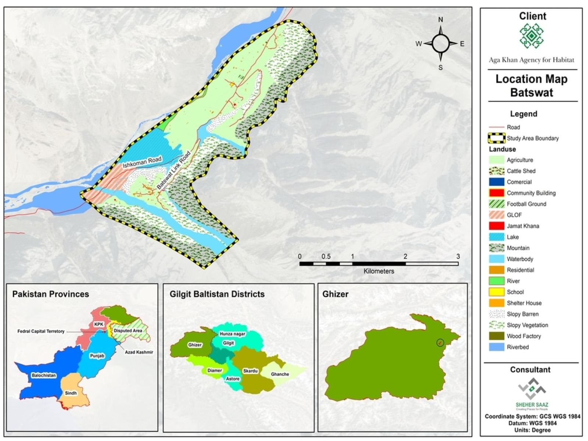
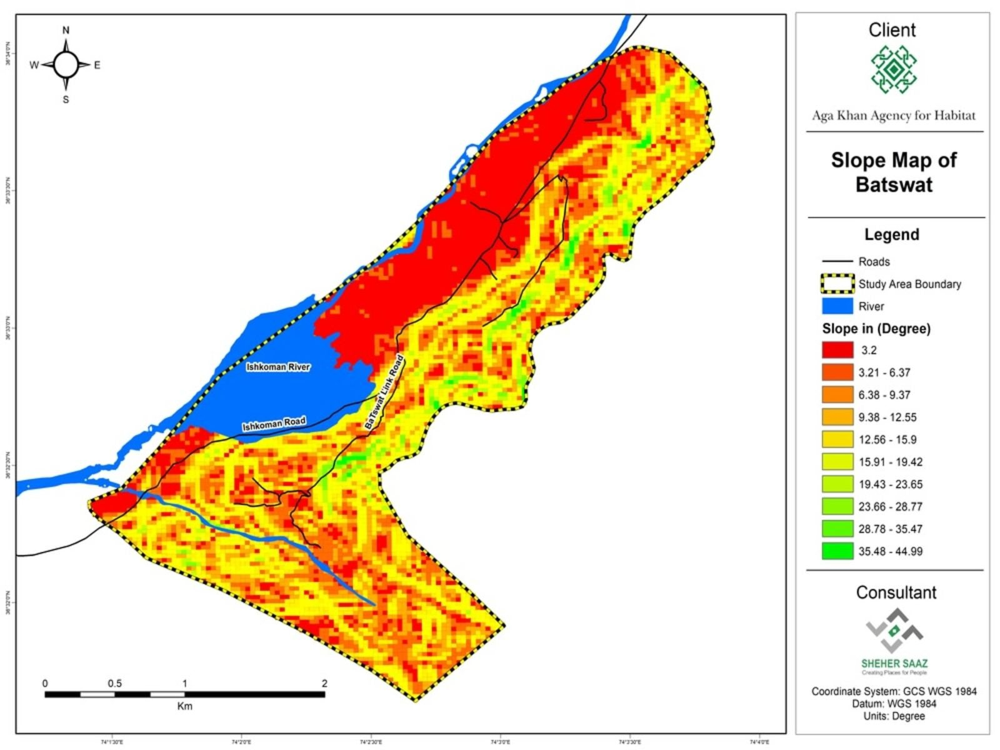
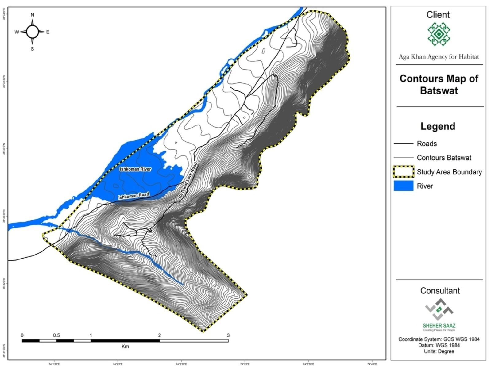

Master Plans & Municipal GISFig. 1 Location and land-use map of Batswat with inset maps Fig. 2 Slope map (degrees) Fig. 3 Contour map
Batswat Habitat Planning: Terrain Assessment
Base maps for a habitat planning study: a location and land-use map, a slope map and a contour map of the Batswat study area.
- Location
- Batswat, Pakistan
- Year
- 2022–2024
- Client
- Aga Khan Agency for Habitat · via Shehersaaz
- Tools
- ArcGIS, DEM, Slope & contour analysis






Challenge
Understand the terrain constraints of the Batswat study area for a habitat planning study.
Approach
- DEM processing
- Slope in degrees, classified
- Contour generation
- Location and land-use map with inset maps
Results
Location, slope (in degrees) and contour maps used to read terrain constraints and the river corridor for habitat planning.